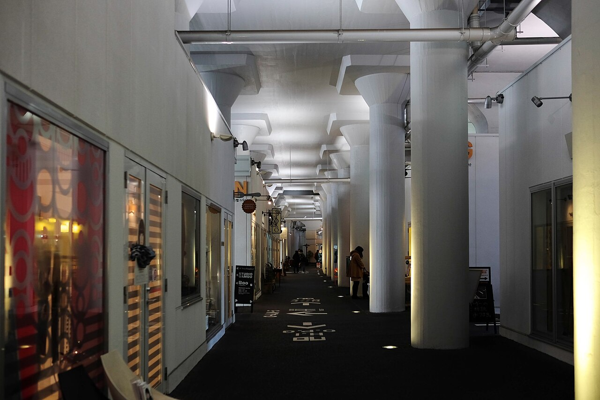

讓路線連續
把車站、公園、商店與文化場所沿走廊接起來。綠帶若中間斷掉，仍不好用。
URBAN STITCHING / A CRITICAL FIELD GUIDE
一條道路可以連接遠方，也可能隔開鄰居。
都市縫合的意義，在於讓被切斷的生活重新相遇。

01 / 先把名詞放旁邊
都市縫合是規劃比喻，不是單一工程規格。它要修補被交通設施、大型用地或不友善路線切斷的連結。研究中的「社區阻隔」提供了較明確的分析起點。
不是只問交通能跑多快，
也問人能否到達
原本近在身邊的地方。
把車站、公園、商店與文化場所沿走廊接起來。綠帶若中間斷掉，仍不好用。
開通或改善跨越通道、路口與街道。沿橋下走得很遠，不代表走得到對面。
不只接回路線，也要避免租金、使用規則與搬遷，讓原居民被新的門檻擋在外面。
一分鐘情境示意
切換方案，看看它改善的是哪一種連結。這是虛構圖解，不是台北工程預測。
住宅與市場很近，地方路線卻被切斷。步行、車行都可能需要繞行。
02 / 一百多年的反省
以下是相關思想與做法的歷史脈絡，並非聲稱每個案例當年都叫「都市縫合」，也不推定中文詞彙有單一發明者。
波士頓翡翠項鍊把公園、水道與林蔭路組成系統，兼顧環境與公共使用，是廊帶串接的前史。
[17] 來源Jane Jacobs《美國大城市的死與生》已專章討論「邊界真空」。大型單一用途邊界，值得與街道生活一起檢視。
[18] 來源西雅圖 Freeway Park以覆蓋部分I-5的方式，修補被道路分隔的街區，是具體工程，而非近年口號。
[15] 來源舊金山1991年拆除Embarcadero高架；巴黎則把停用鐵路轉為綠廊與工藝拱廊。目的一樣，工具不同。
[19] 來源[14] 來源High Line、清溪川等案例引起關注；也帶出原商家搬遷與房地產增值的分配爭議。
[08] 來源[10] 來源公共空間的評估必須涵蓋不同群體、可負擔性與長期營運。一次開幕人潮，回答不了十年的社區變化。
[02] 來源[09] 來源03 / 世界案例・照片與證據
保留運行中高架、改造停用鐵路、拆除高架與道路覆蓋，是不同策略。案例不硬分全勝或全敗：確有成果，也有受損與證據空白。
顯示 8 個案例
01 ／ 日本・東京 · 運行中高架再利用
讓鐵路繼續走，橋下換一種生活。
把秋葉原與御徒町之間原本以倉庫、停車用途為主的高架下，轉為工房、商店與體驗場所，延續周邊工藝脈絡。
官方資料可確認空間與業態轉型，並以創造人流、連結製作者和訪客為目標。
營運願景不是成效研究。本頁未取得足以比較改造前後事故、居民往來或區域經濟淨增的獨立資料。不能只憑商店存在就宣稱社區全面受益。
保留高架可以改善使用；是否縫合兩側，仍要量測橫向通行。
[03] 來源03 ／ 加拿大・多倫多 · 運行中快速道路橋下公共空間
橋下可以有人活動，卻不表示車流問題消失。
自2018年起，把 Gardiner 快速道路下部分空間轉為休閒、溜冰與文化活動場所。
04 ／ 美國・紐約 · 停用高架鐵路改公園
同一個公園，可能是屋主的收益，也是租客的壓力。
把停用的高架貨運鐵路改為高架公園，屬基礎設施再利用；並非運行中鐵路下方活化。
05 ／ 韓國・首爾 · 拆除高架＋水岸重建
遊客看到的新水岸，可能是商家失去的舊網絡。
移除高架道路，形成水岸公共空間。此案與「不拆高架也能活化」是不同路線，不可混為同一種解法。
06 ／ 韓國・首爾 · 汽車高架改人行綠廊
一千萬人次，沒有回答每條街都受益了嗎。
將原汽車高架改為步行空中花園，提供新的步行路線與停留空間。
07 ／ 法國・巴黎 · 停用鐵路綠廊＋工藝拱廊
上面是散步路線，下面延續製作與工藝。
舊鐵路分段轉型；1989年已有部分步道開放，1994年形成更連續路段，同年首批工藝拱廊店面開放。
管理方歷史紀錄可確認分期建設、工藝空間交付與後續經營，說明再利用不是近年才出現的做法。
長期存在不等於能證明社區公平或經濟淨效益。本頁沒有足夠的居民、租金與商家對照資料，不能把它評為全面成功。
空間可以上下複合使用，但高架綠廊仍要靠出入口連接街道。
[14] 來源04 / 台北觀察地圖
點選地標或地點卡片，查看已有設施、調查問題與反面檢驗。地點編號不是嚴重程度排行，也不是工程優先順序。
地圖載入中。若底圖無法連線，仍可使用下方地點卡片與完整文字。
底圖 © OpenStreetMap contributors；使用一般地圖而非衛星影像。地圖點位為本頁人工整理；不等同市府正式問題認定。若底圖載入失敗，可點文字清單中的外部地圖連結。
空間尺度判讀；遷移尚非定案
大片不可自由穿越的用地限制街道延續，是大型阻隔的有力候選；「全市最大」仍須依受影響人口、繞行與服務可及性比較。
已有什麼：復興北路已有穿越機場的車行地下道，並非南北完全不通。市府提出遷移構想，中央也仍列機場長期設施計畫。
待查問題：比較保留＋周邊改善與遷移後不同方案：步行、公車、車行各省多少時間？河川、橋梁與堤防是否仍是下一道阻隔？
可能改善：先評估周邊通行與公共運輸；遷移則需航班承接、軍用功能與成本分析，不能只算釋出土地。
反面檢驗：若換成封閉園區或超大街廓，可能只是把一種屏障換成另一種。182公頃機場歷史數據與300公頃周邊構想範圍不同。
[27] 來源[26] 來源[24] 來源[25] 來源市府曾列潛力區；今日障礙待查
公共活動節點與兩側街區相近，但應檢查路口、橋下用途與車流是否妨礙橫向往來，而非把全線視為一道牆。
已有什麼：華山是市府曾列的待縫合潛力區之一；現有路口可穿越，不能直接宣稱沒有南北連結。
待查問題：從南側園區到北側住宅，實際繞行、等待、無障礙銜接如何？夜間是否與白天不同？
可能改善：盤點現有路口、改善視線和連續人行道；以短期試辦檢查效果。
反面檢驗：沿線增加店家若未改善橫向路線，只是活化；不能直接宣稱完成縫合。
[21] 來源[20] 來源官方先期規劃已有指認
高架、土地使用及大型街廓交會，可能同時影響南北與東西往來；官方曾指出人本環境不連續與疏離感。
已有什麼：109年度先期規劃已有大T計畫、八德路及橋下改善策略。既有文件不代表今日仍全未執行。
待查問題：最新完工項目有哪些？停車出入口、轉彎車流及騎樓是否仍構成斷點？
可能改善：先查工程現況，再比較路口調整、停車出入口整併與連續路徑。
反面檢驗：橋下空間有用途不等於方便穿越；也要評估移除車位後的裝卸與居民需求。
[20] 來源市府曾列東區；此點為代表位置
商圈與住宅跨大道相鄰，值得調查目的地之間的過街成本，不能只看店家密度。
已有什麼：東區商圈列於市府既有潛力區域；這個標記不是官方工程界線。
待查問題：跨大道的購物、上學與公車路線，哪幾條真的被迫繞行？
可能改善：選出實際起訖點，量測步行與車行差異，檢查路口與裝卸停車衝突。
反面檢驗：不能用房價、人潮或夜間消費取代原居民生活便利的評估。
[21] 來源市府曾列周邊；開放現況待查
大型歷史基地與周邊街道之間，值得檢查通道密度與開放條件；文化保存與通行需求須共同考量。
已有什麼：臺北機廠周邊列入市府潛力區域。本頁未逐一查核目前所有園區入口與開放時間。
待查問題：免費通行、開放時段、無障礙路線，能否服務附近居民的日常往來？
可能改善：先盤點最新出入口與保存限制，討論可行的周邊或穿越連結。
反面檢驗：不能為了拉直路線破壞文化資產，也不能把開園觀光等同日常路網恢復。
[21] 來源市府曾列潛力區；現況需複查
車站、綠帶及兩側街區應形成可辨識的日常路線；有車站不代表每個方向都同樣容易到達。
已有什麼：松山車站綠帶周邊列入市府潛力區域；此標記不宣告現有改善無效。
待查問題：不同方向進出車站的時間、過街等待與無障礙連續性如何？
可能改善：串接車站、公車站、綠帶與周邊巷道，補上實際斷點。
反面檢驗：增加地標或活動不一定減少通勤繞行；應比較改善前後的門到門時間。
[21] 來源既有入口；社區抵達問題為假設
河濱在旁，居民仍要經由道路與有限入口抵達；應測量堤內街區到堤外公園的完整行程。
已有什麼：五號水門已有通行；延平河濱亦有區域改善計畫。不能稱河岸完全無法到達。
待查問題：老人、推車與輪椅從住宅出發，在哪裡等待、繞路或遇高低差？
可能改善：連續改善通往水門的人行道、路口與指標，維持防洪與防汛操作。
反面檢驗：河岸餐飲與美化不能取代社區可及性；不能為了連結任意削弱防洪功能。
[22] 來源已有連結；品質與時段待查
多個公共目的地相近，值得檢查橋下、園區邊界及出入口之間的連續性。
已有什麼：水岸廣場原本即以連結自來水園區與河濱設施為目標，並非全新待開發地。
待查問題：第一次來的人能否找到路？夜間與輪椅路線是否同樣通順？
可能改善：盤點入口、時段、照明與停車出入口安全，先補路線斷點。
反面檢驗：寶藏巖有居住與文化需求，不能只為觀光導入人潮，也不能假定所有園區全天開放。
[23] 來源已有號誌試辦；後續效果待追蹤
寬闊道路與中央公車站，使短距離通行仍可能有高等待與人車衝突。沒有高架，也能形成阻隔。
已有什麼：2025年開始分段穿越號誌試辦；後續交工處報告可通行秒數增加33%–64%，並規劃擴大。本頁未取得長期事故成效。
待查問題：總等待時間是否下降？慢行者是否有足夠時間？違規與衝突是否減少？
可能改善：檢查試辦後的行人、候車、公車與車流表現，再決定擴大或修正。
反面檢驗：分段穿越若設計不良，也可能增加滯留；應量整段行程而非只報綠燈秒數。
[28] 來源2016年已拆除；不是待拆點
作為已完成改造的比較點：拆除原有引道及調整路型後，哪些通行與公共空間確實改變？
已有什麼：2016年忠孝橋引道拆除並進行周邊道路改善，不能在地圖上當成仍存在的障礙。
待查問題：有無長期行人、車行、事故與店家資料，支持美學之外的效益？
可能改善：用這個案例建立前後評估方法，而非只以照片作判斷。
反面檢驗：古蹟重現是可觀察結果，但不能自動推論所有拆橋方案都划算。
[29] 來源05 / 不只問美不美
以下是本頁的評估立場。承認空間阻隔存在，不代表任何活化方案都合理；反對某個方案，也不等於否認連結的價值。
接通被截斷的地方道路，讓公車、救護與居民少繞行，有實質連結價值。但過境車變快，不一定改善地方可及性。應同時量測所有使用者，而非把開車與步行對立起來。
不消費能不能坐下、穿越或停留？營業結束後通道是否仍開放？若租金與規則把原使用者排除，空間變漂亮也可能增加社會門檻。
大型管制用地確實限制路網，但不能只憑面積就判定社會成本最大。遷移後仍有基隆河、堤防與橋梁；若後續變封閉園區，也可能重製阻隔。應比較保留改善與遷移方案的整體代價。
拆除可能釋放連結，也可能轉移交通或增加成本；保留可以節省資源，也可能留下噪音與污染。鐵路橋下的成功，不能直接套用到快速道路橋下。
屋主資產增值、租客負擔增加、商家營收與政府稅收，是不同結果。要分別報告，並追蹤原居民與原店家的去留，避免用地價取代公共利益。
要求支持者提出路線、成本與成效；要求反對者說明替代方案與取捨。不能由懂不懂一個術語，直接推斷政黨或團隊能力。證據應接受相同標準檢驗。
06 / 一個計畫怎樣才算有效？
先做改善前調查，改善後用相同時段、季節與定義比較；有條件時加入相似未改造地區，才不會把景氣或觀光成長全算成工程功勞。
| 要回答的問題 | 可以查的證據 | 最容易誤用的替代數字 |
|---|---|---|
| 兩側真的接起來了嗎？ | 實際路線距離、過街等待、通道開放時間、無障礙連續性 | 只報步道總長或綠化面積 |
| 各種交通更方便嗎？ | 步行、輪椅、自行車、公車與車行的門到門時間及可靠性 | 只報主線汽車速度 |
| 安全與環境改善嗎？ | 暴露量校正的事故、近失衝突、噪音、空氣與積水 | 只報照明數量或「感覺安全」 |
| 居民與商家受益嗎？ | 原店家存續、營業與租金、居民使用、搬遷去向 | 只報開幕人潮、房價或新店數 |
| 公共投資值得嗎？ | 建設＋長期維護成本、替代方案、受益與負擔分布 | 只報得獎或工程完工 |
07 / 帶著問題走一趟
選「家到市場」、「車站到學校」或「住宅到河岸」。步行一次、比較車行或公車路線，再問最常使用的人。
以下是觀察提醒，勾選僅在目前頁面暫存，不送出資料，也不產生科學評分。
已整理 0 / 6 項觀察。
08 / 資料與可追溯性
依官方文件、研究摘要與營運資料交叉整理。營運方說法不當作獨立成效證明；未能取得全文時，明確限於摘要。照片授權在各圖下，歷史影像不代表今日狀態。
Anciaes、Jones、Mindell，Transport Reviews（2016）
英國運輸部，TAG A4-2（更新2024）
JR東日本都市開發，概念說明
Low Line，Projects
BBUK，Low Line Bankside
The Bentway，Support；為累計場地與活動人次，非獨立成效評估
多倫多市，Under Gardiner Public Realm Plan（2024），第22頁
Black、Richards（2020），Landscape and Urban Planning，204，103900
High Line Network，Community First Toolkit
Kim、Kim，《住宅都市研究》5(1)，35–41（2015）；本頁依英文摘要，未以不清楚的營業利益百分比作比較
Rethinking Cheonggye Stream Restoration Project（2023）
首爾市政府（2018）；人次與態度資料，不是長期因果證明
韓國觀光學會，步行觀光空間研究（2018）；屬空間分析，非已證實商圈衰退
Viaduc des Arts，歷年發展紀錄
西雅圖市檔案館；1976年開放、重新連接街區
西雅圖設計委員會，入口、照明與指標等改善
美國國家公園署；1878年開始的公園系統
Jane Jacobs，《The Death and Life of Great American Cities》章節紀錄
美國運輸部典藏，Embarcadero 個案
北市都發局，109年度人本環境改善先期規劃；不能據此判斷今日全部尚未改善
北市都發局，重點景觀地區行動策略計畫
北市水利處；堤外改善不等於堤內抵達已改善
臺北自來水園區；已有園區及河濱連結目標
北市都發局（2026-10-22）；規劃構想不代表遷移已定案
民航局飛航服務總臺；仍列配合松山機場2040年整體規劃之建設
北市橋涵管理系統；民族東路至濱江街、穿越松山機場
臺北旅遊刊物；約182公頃、跑道約2.6公里，歷史數據不與周邊300公頃混用
北市交工處；報告通行秒數增加33%–64%，不等同事故下降的因果證明
北市府，2016年拆除與周邊路型改善